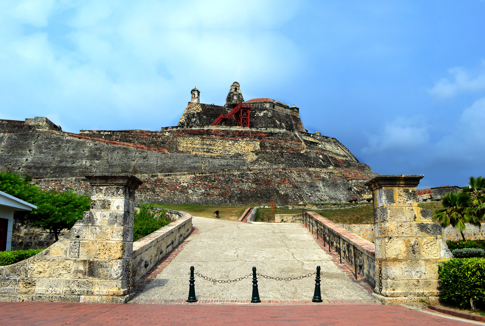
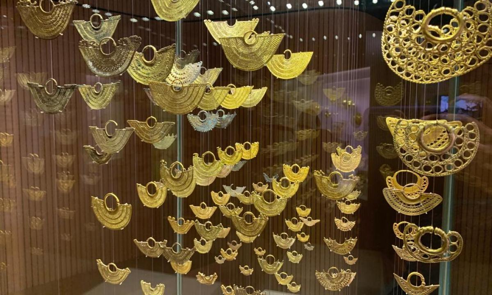
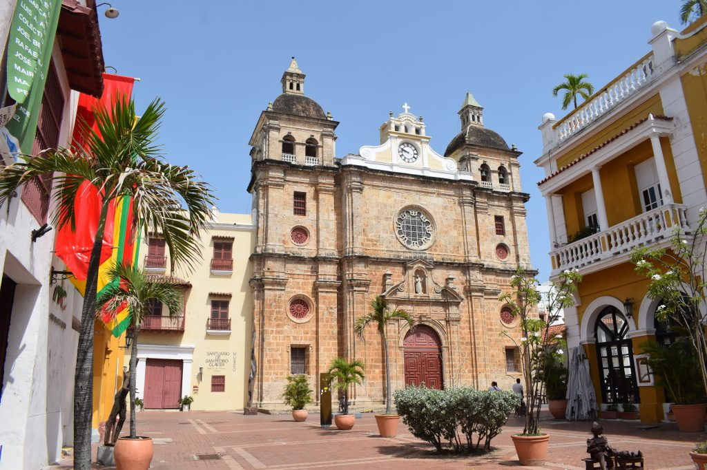

Cartagena
Que hacer en Cartagena?
Ciudad Amurallada

La Ciudad Amurallada es el centro histórico de la ciudad de Cartagena de Indias y ha sido declarado tanto patrimonio nacional de Colombia como Patrimonio de la Humanidad. Aquí vivían los nobles y las personas importantes en la época de la Colonia. Al recorrer la Ciudad Amurallada podemos encontrar el Palacio de la Inquisición, el Museo del Oro Zenú y elMuseo de Arte Moderno. También la Plaza de los Coches que presenta un recorrido por las casonas coloniales y por la estatua de Pedro de Heredia, la Iglesia y el Convento de San Pedro de Claver y la Alcaldía Mayor, entre otros edificios históricos perfectamente conservados de Cartagena de Indias.
Castillo de San Felipe
Fortaleza de la época colonial española construida sobre el Cerro de San Lázaro para proteger la única entrada por tierra a Cartagena de Indias.
Museo del Oro Zenú
El Museo del Oro Zenú en Cartagena es parte de la red del Museo del Oro del Banco de la República de Colombia. Preserva y exhibe las obras de orfebrería y cerámica de los antiguos zenúes, que mediante colosales obras de ingeniería hidráulica vivieron hace dos milenios en las llanuras del Caribe colombiano, y destaca la cultura y tradiciones de los actuales zenúes.
Santuario de San Pedro Claver
Hace cuatrocientos años, los jesuitas se establecieron en Cartagena y fundaron una escuela y una iglesia en el centro de la ciudad. Durante el siglo XVII, un padre llamado Pedro Claver dedicó toda su vida a la protección de los esclavos africanos y se convirtió en santo 300 años después. Para mantener vivo su legado, los jesuitas regresaron a la ciudad a fines del siglo XIX y comenzaron a coleccionar piezas para un museo que incluye arte caribeño precolombino, religioso y africano y, por supuesto, la cámara y otros espacios donde vivía el santo y murió. Hoy en día es el museo con la colección más completa de arte religioso en la costa colombiana, y el edificio conserva el espíritu de Claver, el espíritu de los Derechos Humanos.